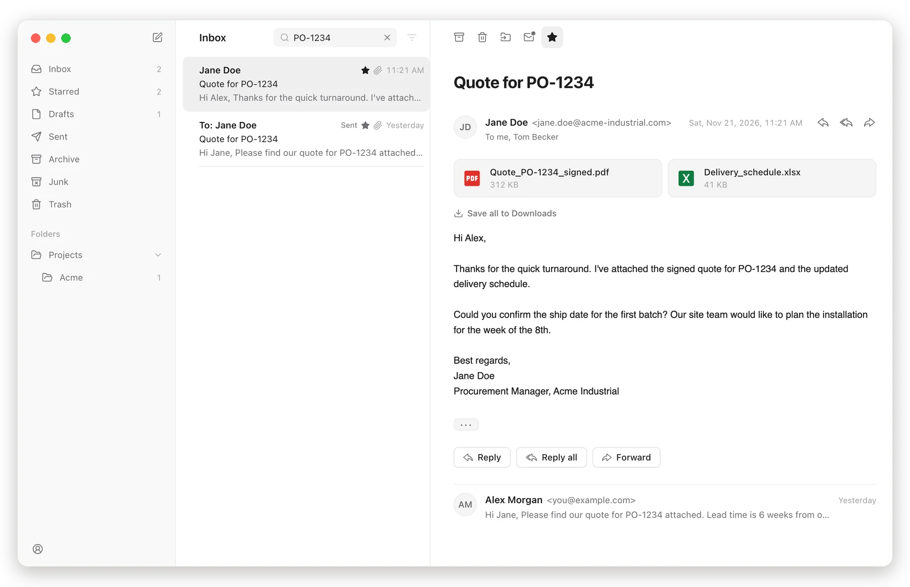
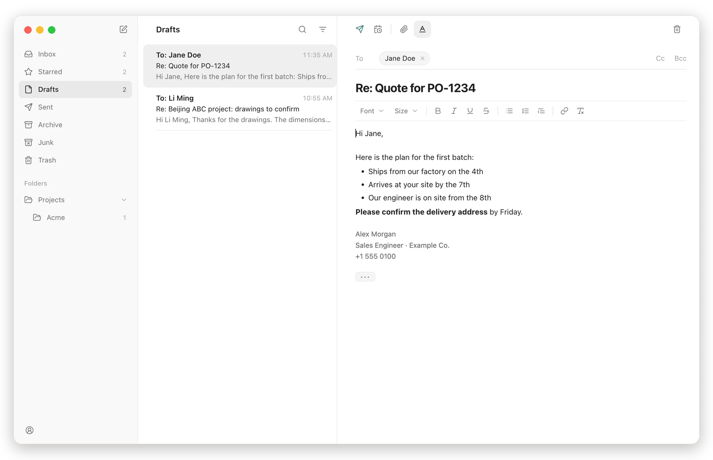

The mail app your AI agent can actually use.
Ragdoll Mail is a desktop mail app with a command line built in. Claude Code, Codex or any agent that runs commands can search your mailbox and write replies for you. Every draft shows up in the app, and nothing goes out until you press Send.
Not signed by Apple or Microsoft yet. The first time, choose Open Anyway (Mac: System Settings → Privacy & Security) or Run anyway (Windows: More info).
I wanted AI to help with my email. Nothing out there fit.
I deal with a lot of work email, and I wanted Claude Code to help me answer it. The good AI mail apps are subscriptions, usually $25 to $30 a month, and most of them only work with Gmail or Outlook. My work mailbox is on Tencent Exmail, so they were out before I could even try them.
Command-line mail tools such as Himalaya are free, but they hand every search to the mail server. Each search means a trip over the network, and it gets slower as the mailbox grows. Some servers barely search at all. Mine ignored the words completely and sent back the whole folder, all 5,044 mails, for anything I typed.
So I built the tool I wanted: a normal mail app for me and a command line for my agent, both searching the same index on my own computer.
Eric Tan, who made Ragdoll Mail
Your agent writes the draft, and you decide whether it goes out.
The ragdoll command is installed from the app in one click (Settings → Command line). Every command has a --json option, and ragdoll --help lists them all, so an agent can learn it on its own. Read the command-line guide →
Real drafts in your real mailbox
ragdoll draft saves the reply in your Drafts folder, with your signature and the earlier mails quoted. You can open it in the app, on your phone or in any other mail app.
Checked before it can go
ragdoll check catches an empty subject, a mail that says “attached” with nothing attached, a [Name] left in the text, and garbled characters.
Nothing is sent without you
Sending needs an explicit yes, and a draft that has already gone out cannot be sent again by mistake.
No API key, no OAuth app, no quota
It talks plain IMAP and SMTP to your own mail server. The password stays in the system keychain and is never printed.
Search never leaves your computer.
Ragdoll Mail keeps a full-text index of your mail in SQLite on your own disk. Tools that rely on the server have to connect, sign in and wait for the server each time you search.
Measured on 21 November 2026 on a MacBook, with a Tencent Exmail inbox of 5,044 mails and the word “invoice”. The server search opened a new connection and sent IMAP SEARCH, which is what a command-line tool does on every run: 0.9 s to sign in, 0.13 s to search. Times change with the server and the network. A two-character Chinese word takes longer on the local side, about 0.08 s.
How it compares with AI mail apps and command-line tools.
| Ragdoll Mail | Superhuman | Shortwave | Himalaya | Apple Mail, Outlook | |
|---|---|---|---|---|---|
| Price | Free | From about $25 a month | Free plan with AI limits, paid plans | Free | Free |
| Mailboxes | Any IMAP mailbox | Gmail and Outlook | Mainly Gmail | Any IMAP mailbox | Most mailboxes |
| Desktop app | Yes | Yes | Yes | No, terminal only | Yes |
| Command line your agent can use | Yes | No | No | Yes | No |
| Where search runs | Your computer | Online, through Gmail or Outlook | Online, on Shortwave's servers | On the mail server | Depends on the app |
| Open source | Yes | No | No | Yes | No |
From each product's public pages, November 2026. If something here is wrong or out of date, open an issue on GitHub and I will fix it. More comparisons, including Foxmail, Thunderbird and Spark →
Good enough to use every day, even without AI.
Every word, every mail, at once
Subjects, names, file names and the full text, in English, Chinese, Japanese and Korean. It still works with no internet.

Your mail stays with you
The app talks only to your own mail server. There is no cloud in between and no account with us.
Hard to send a mistake
You have 30 seconds to take a mail back. It also stops you when you wrote “attached” and attached nothing.
Write the way you like
Fonts, lists, links and your signature. Send now, tonight, or Monday at nine.

Chinese mail that reads right
Names and file names from older Chinese mail systems show up as they should, not as broken characters.
A key for everything
C writes a mail, R replies, E archives. Press ? to see them all.
Nothing changes in your mailbox
It uses the same folders as your webmail and your phone, so they keep working as before.
The mailbox you already have.
Good to know.
Which AI agents work with it?
Any agent that can run shell commands, such as Claude Code, Codex, Cursor or Gemini CLI. The agent calls the ragdoll command the same way you would in a terminal.
Do I need an API key or a paid plan?
No. Ragdoll Mail signs in to your mailbox over IMAP and SMTP, like any mail app. There is no API key to create, no OAuth app to register and no usage limit.
Can my agent send mail without asking me?
Not by accident. The send command refuses to run without an explicit yes, and the setup we suggest tells agents to ask you first. Most people let the agent write the draft and press Send themselves.
Why not just use the mail server's search?
Every server search is a round trip over the network, and it slows down as the mailbox grows. Some servers hardly search at all. A local index answers in milliseconds and works offline.
Is my mail safe?
Your mail is stored on your computer and on your own mail server, and nowhere else. The app sends nothing to us. We do not run a server.
Is it really free?
Yes. There are no ads, no subscription and no account. The code is open source under the MIT license, so anyone can check what it does.
Give your agent a mailbox it can work with.
Free and open source. No account, no ads.